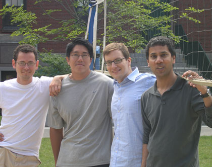

News Archives : 2008 : Astrocytes Spy on Neuronal Conversation to Bring a Rush of Blood to the Head
by Venkatesh Murthy and Gabor Petzold
June 25, 2008

The co-authors (left to right): Dinu F. Albeanu, Tomokazu F. Sato, Gabor C. Petzold, and Venkatesh N. Murthy
The human brain represents approximately 2% of the total body weight, but accounts for about 20% of the energy consumed. Functional hyperemia (local increases in blood flow triggered by neuronal activation) ensures that local brain activity is always matched by an adequate supply of oxygen and nutrients through blood flow. This phenomenon was first described over 100 years ago, but the underlying cellular pathways have largely remained unknown. Recent technological and physiological discoveries have stirred new interest in functional hyperemia. First, modern brain imaging techniques such as functional magnetic resonance imaging and positron emission tomography use functional hyperemia as a surrogate for neural activity. Second, impaired functional hyperemia has been implicated in the pathophysiology of several acute and chronic neurological diseases, such as stroke, Alzheimer's disease and vascular dementia. Several questions related to functional hyperemia have remained open. For example, a hotly-debated issue is whether pre-, post- or extrasynaptic activity (or a combination of these steps) triggers functional hyperemia. Also, the exact cellular and molecular sequence of events by which glutamatergic synaptic transmission causes changes in blood flow have remained unclear.
In our paper in Neuron, we addressed some of the issues raised above using intravital multi-photon microscopy of mice expressing a fluorescent protein called synaptopHluorin in olfactory receptor neurons. Increases in synaptopHluorin fluorescence correspond to glutamate release. We simultaneously monitored glutamate release and local blood flow in olfactory glomeruli, and found that presynaptic transmitter release and functional hyperemia are highly correlated. This remarkable graded relation is surprising given the large number of potentially nonlinear signaling steps between the two. We used this assay to show that (i) local postsynaptic activity is dispensable for the coupling, (ii) functional hyperemia is largely mediated by astrocytes (a type of glial cells in the brain) via multiple signaling pathways, (iii) glutamate increases blood flow by acting on metabotropic glutamate receptors (mGluR) via calcium-dependent cyclooxygenase activation and (iv) functional hyperemia involves a second novel signaling pathway initiated by the uptake of glutamate by astrocytic glutamate transporters.
Our study is one of the first to visualize simultaneously many of the major steps between neural activity and blood flow under normal physiological conditions in vivo and in real time. This technical advance allowed us to demonstrate that increased presynaptic activity induces functional hyperemia (and that local postsynaptic activity is dispensable). Second, our study places astrocytes unequivocally in the middle of the coupling between neural activity and blood flow. Third, we discovered a novel signaling mechanism in astrocytes, involving glutamate transport, which couples glutamate release to blood flow changes. Finally, our approach allows for repeated, minimally-invasive intravital imaging of neuronal activity and blood flow over long periods of time. This experimental paradigm, therefore, may help elucidate the individual roles of neurons and astrocytes in generating signals used in functional neuroimaging, as well as how they contribute to neurovascular and neurodegenerative disorders.
The cover of Neuron, courtesy of the Murthy lab: Neuronal activity is tightly coupled to local changes in blood flow.